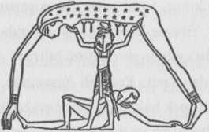

Kozmogonik çevrimin ileri dönüşü Bir’i çokluğa çevirir. Burada büyük bir kriz, bir yarık, yaratılmış dünyayı açıkça iki karşıt varlık düzlemine ayırır. Paiore’nin çiziminde insanlar aşağı karanlıklardan çıkar ve hemen göğü yükseltmeye çabalarlar.{384} Belli bir bağımsızlıkla hareket ettikleri söylenir. Meclisler kurar, karar verir, tasarı yaparlar; dünyayı düzenleme işini üstlenirler. Yine de bu sahnelerin ardında Kıpırdamayan Kıpırdatıcı’nın bir kuklacı gibi iş gördüğünü biliriz.
Mitolojide Kıpırdamayan Kıpırdatıcı’nın, Kudretli Yaşayan’ın ilgi odağı olduğu yerde evreni şekillendirmek hakkında mucizevi bir kendiliğindenlik vardır. Öğeler kendi başlarına ya da Yaratıcı’nın en hafif sözüyle toplanıp harekete geçerler; kendini parçalara ayıran kozmik yumurtanın parçaları yerlerine yardımsız gider. Fakat bakış açısı yaşayan canlılara odaklanırsa, doğanın ve uzayın panoraması içlerinde yaşayacak olan kişiler açısından seyredilirse, kozmik sahneyi ani bir dönüşüm gölgeler. Dünyanın biçimleri, yaşayan, büyüyen, uyumlu bir şeyin düzeninde hareket eder gibi görünmez artık, boyun eğmezler ya da daha doğrusu atalet halinde görünürler. Evrensel sahnenin destekleri yer değiştirmeli, hatta şekle sokulmalıdır. Yer, dikenler, ısırgan otları çıkarır; insan alnının teriyle ekmek yer.
İki tür mit çıkar karşımıza. Birine göre, yarı tanrısal güçler kendilerince eylemeye devam eder; diğerine göre, etkinlikten vazgeçer, hatta kozmogonik çevrimin daha fazla ilerlemesine karşı çıkarlar. Bu sonuncu mit biçiminin sunduğu güçlükler, kozmik ebeveynlerin başlangıçtaki, yaratıkları ortaya çıkaran kucaklaşmasının uzun karanlığına dek uzanır. Bırakalım bu korkunç temayı bize Maoriler tanıtsın:
Rangi (Gök), Papa’nın (Toprak Ana) karnına öyle sıkı uzandı ki, çocuklar rahimden kurtulamadı. “Dengesiz bir durumdaydılar, karanlığın dünyasında yürüyorlardı ve şöyle görünüyorlardı: bazısı emekleyerek ... bazısının iki eli havadaydı... bazısı yan yatmış ... bazısı sırtüstü, bazısı kamburunu çıkarmış, bazısının başı eğik, bazısının dizleri bükük ... Hepsi Rangi'yle Papa’nın kucaklaşmasındaydı...

Çizim 14. Göğün ve Yerin Ayrılışı.
“Sonunda Gök ve Yer’in doğurduğu aralıksız karanlıktan bıkmış varlıklar aralarında konuştular, ‘Rangi’yle Papa’ya ne yapacağımıza karar verelim, onları öldürmek mi iyi, ayırmak mı?’ O zaman Tu-matauenga, Gök ile Yer’in çocuklarının en öfkelisi konuştu, ‘İyi, öldürelim onları.’
“Sonra Tane-mahuta, ormanların ve içlerinde yaşayan her şeyin ya da ağaçtan yapılmış her şeyin babası konuştu, ‘Hayır, olmaz. Onları ayırmak ve göğün üstümüzde durmasını ve Yer’in ayaklarımızın altında durmasını sağlamak en iyisi. Gök bırakalım yabancı olsun bize, ama emziren annemiz kadar yakın kalsın bize.’ ”
“Birkaç kardeş tanrı umutsuzca gökle yeri ayırmaya çalıştı. Sonunda, görkemli tasarıyı başaran, ormanların ve içinde yaşayan ya da ağaçtan yapılmış her şeyin atası Tane-mahuta’nın kendisi oldu. “Başı sıkıca toprak anasına yerleşmişti ve ayaklarını kaldırıp babası göklere dayadı ve sırtıyla bacaklarını büyük güçle gerdi. Şimdi Ragi ve Papa ayrılmıştı ve çığlıklar ve öfke homurtularıyla bağırdılar. ‘Nasıl katlediyorsun ebeveynlerini? Bizi öldürmek, birbirinden ayırmak gibi bir suçu neden işliyorsunuz?’ Ama Tane-mahuta durmadı, bağırtılarına çığlıklarına aldırmadı; çok, çok yukarıya iteledi göğü. ...”{385}
Eski Yunanların bildiği kadarıyla, bu öykü Hesiodos tarafından Uranos (Gök Baba) ile Gaia’nın (Toprak Ana) ayrılması şeklinde anlatılır. Ona göre, Titan Kronos babasını bir orakla hadım etti ve yolundan itiverdi.{386} Mısır ikonografisinde kozmik çiftin durumu tersinedir: gök anne, baba dünyanın canlılığıdır;{387} fakat mitin örüntüsü aynı kalır; ikisi çocukları olan hava tanrısı Shut tarafından ayrılır, imge bize yine, ikinci, üçüncü ve dördüncü binyıl tarihli, Sümer çivi yazısı metinlerden gelir. Önce ilksel okyanus vardı; ilksel okyanus gökle yerin birleşmesinden oluşan kozmik dağı yarattı; An (Gök Baba) ve Ki (Toprak Ana) ise, An’ı Ki’den ayıran ve sonra insanlığı ortaya çıkarmak için kendisi annesiyle birleşen Enlil’i (Hava Tanrısı) yarattı.{388}
Çaresiz çocukların bu işleri vahşi görünüyorsa da, İzlanda Eddalar’ında ve Babil Yaratılış Tabletleri’nde karşılaştığımız ebeveyn gücünün toptan yok edilişinin yanında hiç kalırlar. Buradaki son saldırı, hiçliğin yarı tanrısal varlığının “kötü”, “kara”, “bulanık” olarak kişileştirilmesinde verilir. Artık yaratıcı kaynağı, derin uykunun tohum halinin kişileşmesini küçük gören parlak genç savaşçılar, hiç beklemeksizin onu parçalar, didikler, dilimler ve dünyanın yapısına harmanlarlar. Bu bizim bütün daha sonraki ejder katletmelerimizin, kahramanın uğraşlarının asırlar süren tarihinin başlangıcının örüntüsüdür.
Edda öyküsüne göre, “esneyen aralık”{389} kuzeyde sisli bir buz dünyası ve güneyde bir ateş bölgesi yarattıktan sonra ve güneyden gelen ateş kuzeyden gelen buz nehirlerine işleyince köpüklü bir zehir sızdı dışarı. Daha sonra bundan, kırağıya dönüşen bir çiselti yükseldi. Kırağı eriyip dağıldı; yaşam Ymir adlı uyuşuk, devasa, erdişi, uzun bir figür şeklindeki damlalarla hızlandı. Dev uyuyordu ve uyurken terliyordu; ayaklarından birinin diğerinden oğlu oldu, sol elinin altındaysa bir erkekle karısı tohumlandı.
Kırağı durmaksızın eridi, damladı ve ondan Audumla adlı inek belirdi. Göğsünden Ymir'in doymazca içtiği dört süt nehri akıyordu. Fakat inek kendi yemeği olarak tuzlu buz kalıplarını yaladı. Yaladığı ilk günün akşamı, kalıplardan bir adamın saçı belirdi; ikinci gün bir adamın başı; üçüncü gün, adamın tümü oradaydı ve adı Buri’ydi. Buri’nin, Ymir'den çıkan yaratıkların dev kızlarından biriyle evlenen Borr adlı (annesi belirsiz) bir oğlu oldu. Karısı Odin, Vili ve Ve üçlü birliğini doğurdu ve sonra bunlar uykucu Ymirl katlettiler ve gövdeyi parçalara ayırdılar.
Ymir'in etiyle yer biçimlendirme
Ve teriyle deniz;
Kemikleriyle kayalıklar, saçıyla ağaçlar,
Ve kafatasıyla gök.
Sonra kemiklerinden şen tanrılar
İnsanoğulları için Migdard yaptı;
Ve beyninden, huysuz Bulutların hepsi yaratıldı{390}
Babil versiyonunda kahraman Marduk, güneş tanrıdır; kurbansa - demon sürülerinin koruduğu korkutucu, ejder benzeri,- Tiamat, ilk hiçliğin kendisinin bir dişi kişileşmesi: tanrıların anası olan, fakat artık dünya için bir tehlike olan kaostur. Tanrı, yay ve üç çatallı mızrakla, sopa ve ağla ve bir savaş rüzgârları kafilesinin eşliğinde arabasına yerleşir. Toynaklarıyla yeri sarsmaya eğitilmiş dört at köpük içindedir.
... Fakat Tiamat başını çevirmedi,
Kıpırdamayan dudaklarla isyankâr sözler söylemedi....
O zaman tanrı şimşeği, güçlü silahını kavradı,
Ve öjkelenen Tiamat’a şöyle söyledi:
“Sen büyüdün, sen kendini fazla methettin,
Ve kalbin bir an evvel savaşa atılmak istedi....
Ve atalarım olan tanrılara karşı sen kötü bir tasarı kurdun.
Kuşansın öyleyse yandaşların, silahlarınızı kuşanın!
Haydi! Sen ve ben, savaşalım!”
Tiamat bu sözleri duyunca,
Kendinden geçti sanki, aklını yitirdi.
Tiamat vahşi, derin çığlıklar attı,
Titredi ve baştan ayağa sarsıldı.
Bir efsun mırıldandı, büyüsünü yaptı.
Ve savaş tanrıları silahlarına atıldılar.
O zaman Tiamat ve tanrıların vekili Marduk ilerledi;
Çatışmaya geldiler, savaşa yaklaştılar.
Tanrı ağını fırlatıp yakaladı onu,
Ve ardındaki şeytani rüzgârı yüzüne püskürttü.
Karnını korkunç rüzgârlar doldurdu,
Ve cesareti yitti ondan, ve ağzını alabildiğine açtı.
Tanrı çatal mızrağı kapıp karnını yardı,
İçini oydu, kalbini söktü.
Üzerine abanıp canını aldı;
Gövdesini yere fırlatıp üzerine çıktı.
Sonra kalan yandaşlarını da dağıtan Babil tanrısı yeryüzünün anasına döndü:
Ve tanrı Tiamat’ın parçaları üzerinde durdu,
Ve acımasız sopasıyla beynini parçaladı.
Kan damarlarını dağıttı,
Ve kuzey rüzgârının onu gizli yerlere taşımasını sağladı....
Sonra ölü gövdesine bakarak dinlendi tanrı,
...ve kurnazca bir tasarı kurdu.
Onu yassı bir balık gibi ikiye ayırdı;
Bir yarısını cennete kapı örtüsü yaptı.
Bir sürgü koydu, bir bekçi dikti,
Ve sularının çıkmasına izin vermemelerini söyledi.
Gökleri aştı, oraları gözledi,
Ve Derinlere karşı Nudimmud’un evini kurdu.
Ve Tanrı Derinlerin yapısını ölçtü. ...{391}
Marduk bu kahramanca tavırla, yukarıdaki suları bir tavanla ve aşağıdaki suları bir tabanla geri itti. Sonra aradaki dünyada insanı yarattı.
Mitler, yaratılmış dünyadaki çelişkinin görüldüğü gibi olmadığını sergilemekten usanmaz. Katledilmiş ve parçalanmış olsa da Tiamat’ın işi bitmemişti. Savaşa bir başka açıdan bakıldığında kaos-canavarının kendi düzenini sarstığı ve parçalarının uygun yerlere gittiği görülecektir. Marduk ve onun soyundan gelen tüm tanrısallar, Tiamat’ın özündendi. Bu yaratılmış biçimler açısından her şey sanki tehlike ve acıya karşın kudretli bir el tarafından yapılmış gibiydi. Fakat dışa yayılan varlığın merkezinde, et gönüllü olarak sunulmuştu ve onu parçalayan el sonuçta kurbanın kendi arzusunun bir aracından başka bir şey değildi.
Bunda mitin temel paradoksu yatmaktadır: ikili odak paradoksu. Kozmogonik çevrimin başlangıcında “Tanrı karışmıyor” ve aynı zamanda “Tanrı yaratıcı-koruyucu-yok edicidir,” demek nasıl olası olduysa, şimdi Bir’in çoğa bölündüğü bu can alıcı dönemeçte kader “olmakta,” ama aynı zamanda “oldurulmaktadır.” Kaynağın bakış açısından dünya, varlığın içine akan, parçalanan, çözülen devasa bir biçimler armonisidir. Fakat hızla gelip geçen yaratıkların yaşadığıysa korkunç bir savaş çığlıkları ve acı kakafonisidir. Mitler bu acıyı reddetmez (çarmıha gerilme); onun içinde, ardında, çevresinde asıl huzuru sergilerler (göğe yükselme).{392}
Bakış açısının, asıl Neden’in sakinliğinden çevresel etkenlerin kargaşasına kayması Cennet Bahçesindeki Adem ile Havva’nın Düşüşü’nde görülür. Yasak meyveyi yediler “ve ikisinin de gözleri açıldı.”{393} Cennetin saadeti onlara kapandı ve dönüştürücü bir peçenin öte yanından gördüler yaratılmış alanı. Bundan sonra engellenemez olanı elde edilmesi güç olan olarak yaşayacaklardı.